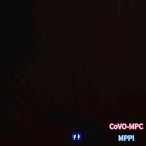
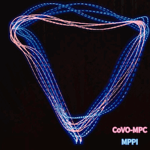
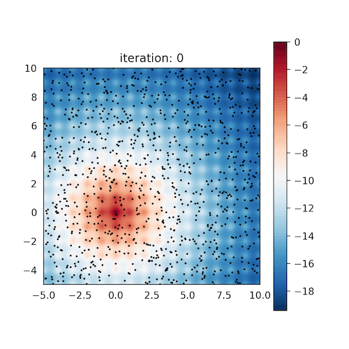
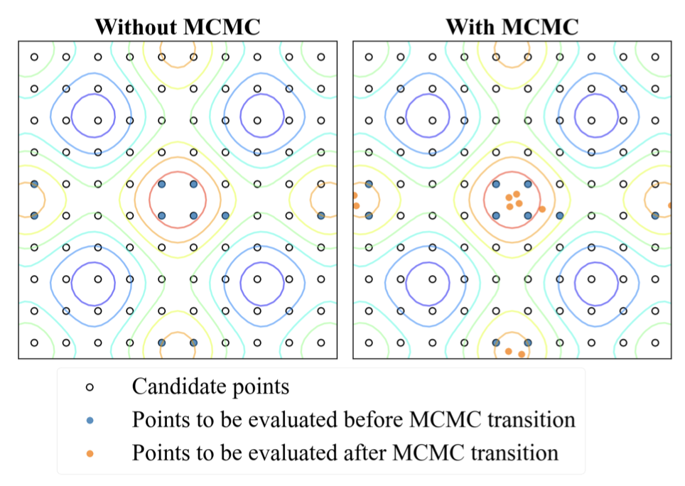
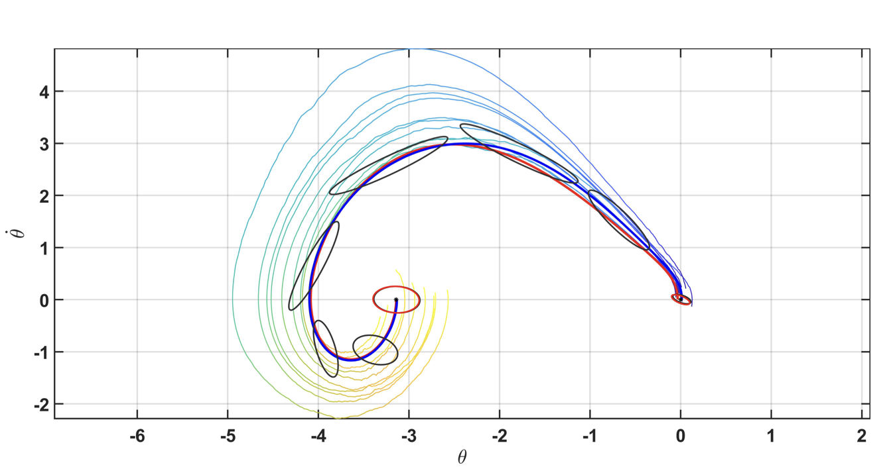

|
Zeji Yi I am a second-year Ph.D. student in Electrical and Computer Engineering at Carnegie Mellon University, where I am affiliated with the Robotics Institute. I am fortunate to be advised by Prof. Guannan Qu and Guanya Shi(LeCAR Lab). Previously, I recieved my master’s degree at Tsinghua University, advised by Prof.Yanan Sui(LNS Group). I also hold a bachelor’s degree with honors from the Tsien Excellence in Engineering Program at Tsinghua University.
|
{kind=link}
ResearchI am broadly interested in the intersection of learning, control, and optimization. My research focuses on developing theoretical tools to deepen our understanding of the connections between learning and control, with the aim of inspiring new algorithms that are more applicable to real-world robotic tasks. |
 |
Full-Order Sampling-Based MPC for Torque-Level Locomotion Control via Diffusion-Style Annealing
Haoru Xue*, Chaoyi Pan*, Zeji Yi, Guannan Qu, Guanya Shi Under Review Website / arXiv / Code DIAL-MPC is the first training-free method achieving real-time whole-body torque control using full-order dynamics. |
 |
Safe Bayesian Optimization for the Control of High-Dimensional Embodied Systems
Yunyue Wei, Zeji Yi, Hongda Li, Saraswati Soedarmadji, Yanan Sui CoRL 2024, Website / Paper / Code We introduce a safe and efficient high-dimensional Bayesian optimization approach for complex control tasks including musculoskeletal systems. |
 |
Model Based Diffusion for Trajectory Optimization
Chaoyi Pan*, Zeji Yi*, Guanya Shi+, Guannan Qu+ NeurIPS, 2024 Website / arXiv / Code MBD is a diffusion-based trajectory optimization method that directly computes the score function using models without any external data. |
|


|
CoVO-MPC: Theoretical Analysis of Sampling-based MPC and Optimal Covariance Design
Zeji Yi*, Chaoyi Pan*, Guanqi He, Guannan Qu+, Guanya Shi+ L4DC, 2024 Website / arXiv / Code We quantify the convergence rate of sampling-based MPC, and design a practical and effective algorithm CoVO-MPC with optimal rate. |
|


|
Improving sample efficiency of high dimensional Bayesian optimization with MCMC
Zeji Yi*, Yunyue Wei*, Chuxin Cheng*, Kaibo He, Yanan Sui L4DC, 2024 arXiv / Code We utilize MCMC and Langevin Dynamics to efficiently propose sampling points for Bayesian Optimization in High-Dimensional space |
|  |
Nonlinear Covariance Control via Differential Dynamic Programming
Zeji Yi, Zhefeng Cao, Evangelos Theodorou, Yongxin Chen ACC, 2020 Paper / Code Covariance control for stochastic system with stochastic differential dynamic programming. |